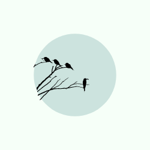

-
FOGO
Um poema escrito sobre o amor , desejo e insônia.
-
PASSARINHO
Sobre as visitas e os encontros que temos na via.
-
MOINHO
Texto sobre individuar , e o cuidado de si .

Um poema escrito sobre o amor , desejo e insônia.
Sobre as visitas e os encontros que temos na via.
Texto sobre individuar , e o cuidado de si .
Esse site foi desenvolvido com o objetivo de iniciar meu Portfólio em desenvolvimento Front - End , área na qual pretendo estagiar. Sou estudante de Engenharia de Software pela PUC e curso Teatro. Apaixonada por tecnologia , filosofia e artes , escrevo poemas e ensaios que serão utilizados como conteúdo.